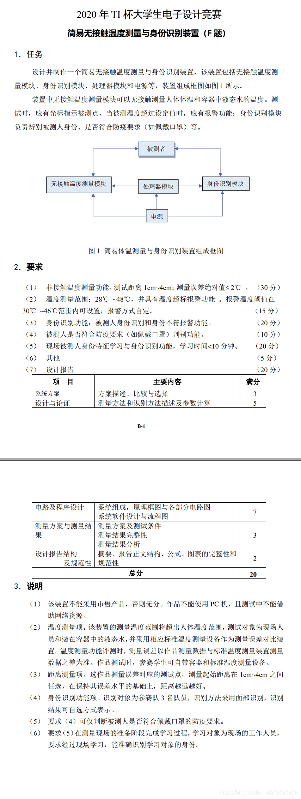
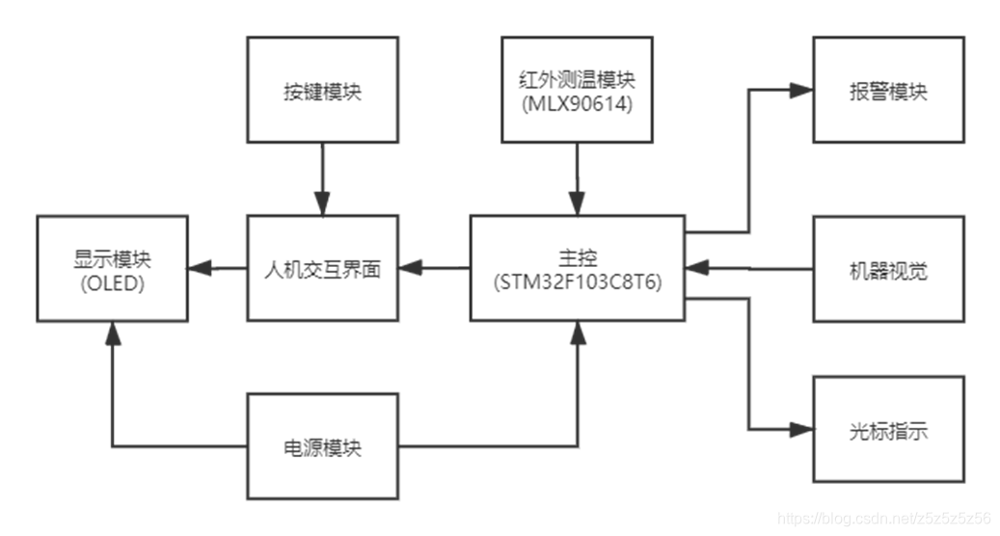
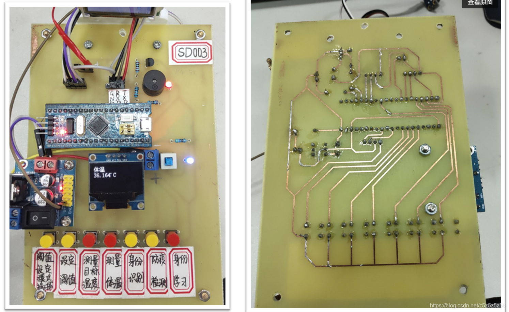
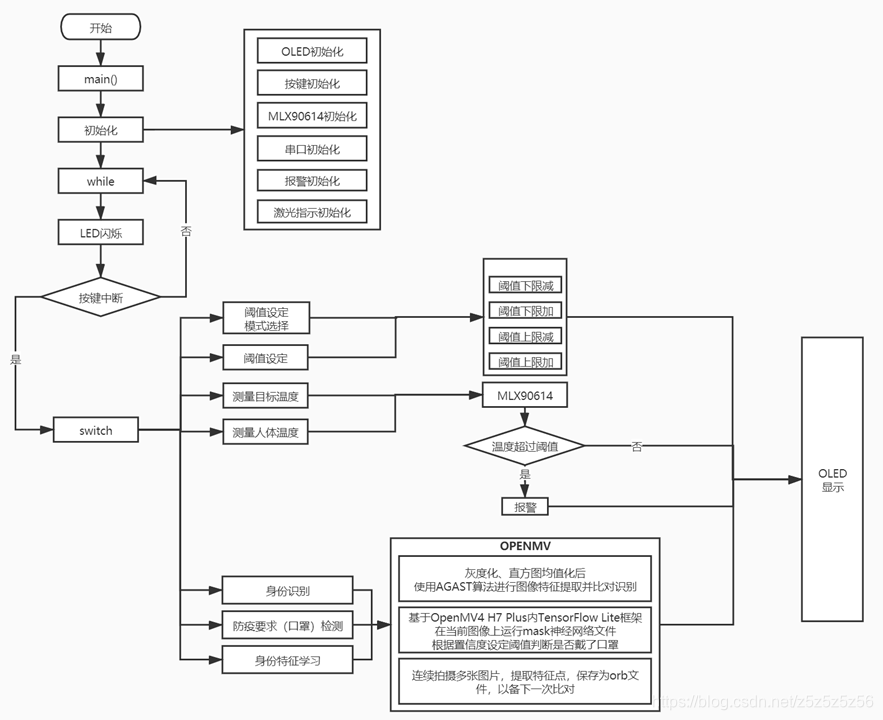

我决定把资源倒腾倒腾发上来，一方面分享大致思路，另一方面也当是纪念了。做的是 2020 电赛 F 题：简易无接触温度测量与身份识别装置

2020 电赛 F 题题目
整体设计
硬件选择
机器视觉模块使用 OpenMV，这一方面是我们在备赛过程中认为 OpenMV 的功能足够，一直在准备 OpenMV，另一方面是当时马上下单 K210 开始学习等到货都已经第三天了，调试来不及风险太大了，所以决定使用 OpenMV。

OpenMV H7 Plus
好在我们买的是最顶配型号 OpenMV H7 Plus，最终也顺利完成了题目要求的所有任务。
温度测量方面是 MLX90614 使用某宝的模块 I2C 读取温度，最终我们没有省一拿了省二也是砸在这个模块上，在送测现场出了问题，血的教训，万事都要做好 Plan B 啊！！
主控使用 STM32C8T6，这是因为我们在赛前已经用顺手了，其他的也行。
其他硬件包括 OLED 显示温度阈值等，按键，有源蜂鸣器，激光小灯等就不赘述了。
最后的电路板设计，器件布局如下：

PCB 布局
软件流程
STM32 和 OpenMV 通过串口通信，我们指定一个字母对应进入一个模式，通电后 OpenMV 就在死循环不断等待字母，收到字母即执行对应模式功能，再返回结果。具体可看软件流程图：

软件流程图
视觉算法
由于分工上我主要负责 OpenMV 视觉部分的代码编写等部分，所以这里多说几句视觉方面的 Python 代码编写的心路历程。
刚开始学习阶段主要参考的资料就是心疼科技的两个函数库链接：
分辨不同人脸（身份识别）
拿到题目第一反应就是中文入门教程里面看到过这个 LBP 分辨不同人脸的应用，于是我第一天也确确实实按照手册的思路拍照测试了，但是实际效果并不好，而且受光线和背景影响很大，脸还必须填满摄像头，就很不方便。
于是后来又发现了特征点算法，运算时间有了很大提升，但还有一个问题就是如果背景拍到的范围过大，那么将会从背景提取很多无用的特征点，而要求人保持一定的距离把人脸填满屏幕实在太蠢了。
我的方法是：先加一层人脸识别，将人脸部分局部放大截取出来再拿去提取特征点并进行特征点比对，通过这种方法，就不用对被识别者有很大的要求，实现类似 K210 一样的功能啦~
关于上面这个思路，直接上代码：
#画出特征点
def draw_keypoints(img, kpts):
if kpts:
print(kpts)
img.draw_keypoints(kpts)
img = sensor.snapshot()
time.sleep(1000)
def find_max(pmax, a, s):
global face_num
if a>pmax:
pmax=a
face_num=s
return pmax
def Distinguish_faces():
global NUM_SUBJECTS
global NUM_SUBJECTS_IMGS
pyb.LED(3).on()
# 重置传感器
sensor.reset()
sensor.set_contrast(3)
sensor.set_gainceiling(16)
sensor.set_framesize(sensor.VGA)
sensor.set_windowing((240, 240))
sensor.set_pixformat(sensor.GRAYSCALE)
sensor.set_auto_gain(True, gain_db_ceiling = 20.0)
sensor.skip_frames(time = 500)
pmax=0#保存检测点和样本点的匹配程度，越大越接近，初始化为最小
loop_flag=1#循环检测标志位，检测到人脸身边识别后退出
type_flag=0#kpts1类别正确标志位，正确为1，错误为0
while(loop_flag):
#加了histeq子自适应直方图均衡，当人脸填满整个屏幕的时候可以提高一点点识别准确度.histeq(adaptive=True, clip_limit=3)
#找图片中人脸
#gamma_corr用于修正图像中色彩，数值越高图像越亮
faces = sensor.snapshot().gamma_corr(contrast=1.5).find_features(image.HaarCascade("frontalface"))
lcd.display(sensor.snapshot())
if faces:
#获取image中人像部分largest_face的roi
largest_face = max(faces, key = lambda f: f[3] * f[3])
img=sensor.get_fb().crop(roi=largest_face)#裁剪人脸部分保存到img
kpts1=img.find_keypoints(max_keypoints=90, threshold=0, scale_factor=1.3)
if(type(kpts1).__name__=='kp_desc'):#kpts1的类型是kp_desc，也就是确保find_keypoints找到了特征点
type_flag=1
else:
print("kpts1 type wrong")
type_flag=0
else:
print("find no face")
#仅当图片中有人脸（正脸）且裁切脸部分找到了特征点，才进行特征点比对判断
if type_flag:
loop_flag=0
lcd.display(img)
draw_keypoints(img, kpts1)
num=0
#下面进行特征点比对
kpts2=None
#存储每个人的特征值
feature_values=[0]
for s in range(1, NUM_SUBJECTS+1):
match_count = int(0)
angle_count=0
for i in range(2, NUM_SUBJECTS_IMGS+1):
kpts2=image.load_descriptor("/keypoints/s%s/%s.orb"%(s,i))
match_count+=image.match_descriptor(kpts1, kpts2).count()
print("Average match_count for subject %d: %d"%(s, match_count))
pmax = find_max(pmax, match_count, s)
feature_values.append(match_count)#存储每个人的特征值
#计算平均值
feature_sum=0
for feature_value in feature_values:
print("feature_value is %d" % feature_value)
n=len(feature_values)-1
feature_sum+=feature_value
average=feature_sum/n
print("average is %d" % average)
#计算方差
pow_sum=0
for feature_value in feature_values:
if feature_value==0:
feature_value=average
print("此项方差为%d" % math.pow(feature_value-average,2))
pow_sum+=math.pow(feature_value-average,2)
variance=pow_sum/n
print("variance is %d" % variance)
#根据方差判断，如果三个人的结果差别很大则方差很大，相对来说结果可信
if variance<1500:
uart.write(str(0))
print("unknown person !")
else:
uart.write(str(face_num))
print("The most similar person is:%d"%face_num)
lcd.clear()
pyb.LED(3).off()当然代码中还有许多其他的小细节，比如最后加了一个方差计算，这是为了使得识别陌生人脸更准确，即如果拍摄特征点与内存中存储的三个人的特征点比对结果都差不多，也就是方差小，那就很有可能并不是三个人中的一个人，而是陌生人，这个方差阈值是经过实践得出的，根据光线可能需要不同调整。
总结一下（速成版本，系统学习理论请参考其他大佬）：
- LBP 局部二值模式：采集一定数量的模板 pgm 图片数据。在进行人脸识别时，将读取到的图片与模板数据库进行相似度比较，从中选取最高相似度的模板，从而确定被测人信息。
- 特征点 AGAST 算法：多尺度快速角点特征提取算法。提前保存目标特征 orb 文件，在进行人脸识别时，提取目标的特征点与特征点库进行匹配得出结果，经过方差计算判断可信度后得出结果。
口罩识别
两种模型引申出的两种不同方法：
- 第一种是用 Haar 算子，将 XML 类型的文件转为 cascade 格式，然后识别。缺点是少量样本训练的口罩模型在识别过程中准确度较低。
- 第二种是使用内置的 TFLite 神经网络框架运行。现在 OpenMV 手册已经有了 TFLite 口罩识别模型，识别结果大幅提高。
现场学习
由于使用特征点，现场学习不过就是把拍摄，提取特征点，文件保存放到现场进行罢了，在我这套逻辑下现场学习并没有多出多少难度，我们现场拍摄 20 张够够的了。
#特征学习
def machine_learning():
sensor.reset()
sensor.set_contrast(3)
sensor.set_gainceiling(16)
sensor.set_framesize(sensor.VGA)
sensor.set_windowing((240, 240))
sensor.set_pixformat(sensor.GRAYSCALE)
sensor.set_auto_gain(True, gain_db_ceiling = 20.0)
sensor.skip_frames(time = 2000)
global NUM_SUBJECTS_IMGS
global NUM_SUBJECTS
print("last NUM_SUBJECTS =%d" % NUM_SUBJECTS)
NUM_SUBJECTS=NUM_SUBJECTS+1
print("now NUM_SUBJECTS =%d" % NUM_SUBJECTS)
p_num=NUM_SUBJECTS_IMGS
s=NUM_SUBJECTS
kpts1 = None
while(p_num):
#红灯亮
pyb.LED(1).on()
faces = sensor.snapshot().gamma_corr(contrast=1.5).find_features(image.HaarCascade("frontalface"))
lcd.display(sensor.snapshot())
lcd.clear()
if faces:
largest_face = max(faces, key = lambda f: f[3] * f[3])#获取image中人像部分roi
img=sensor.get_fb().crop(roi=largest_face)#裁剪
lcd.display(img)
#寻找保存整个图片中的特征点
kpts1 = img.find_keypoints(max_keypoints=90, threshold=0, scale_factor=1.3)
if (kpts1 == None):
print("Couldn't find any keypoints!")
else:
#画出此时的目标特征
draw_keypoints(img, kpts1)
lcd.display(img)
#保存此时图片和对应特征点orb文件
#保存截取到的图片到SD卡，蓝灯亮的时候完成一次拍照
image.save_descriptor(kpts1, "keypoints/s%s/%s.orb"%(s,p_num))
img.save("keypoints/s%s/%s.pgm"%(s,p_num))
p_num-=1
print(p_num)
#存一次亮一下提示
#红灯灭，蓝灯亮
pyb.LED(1).off()
pyb.LED(3).on()
sensor.skip_frames(time = 50)
pyb.LED(3).off()
uart.write(str(9))
else:
print("find no face")
#学习完成闪两次绿灯
pyb.LED(2).on()
sensor.skip_frames(time = 100)
pyb.LED(2).off()
sensor.skip_frames(time = 100)
pyb.LED(2).on()
sensor.skip_frames(time = 100)
pyb.LED(2).off()
lcd.clear()
uart.write(str("f"))#发送f代表学习完成其他优化算法
为了让 OpenMV 能获得好的结果真的很努力呢哈哈哈
- 直方图均值化：
.histeq(adaptive=True, clip_limit=3)直方图均值化后，灰度直方图几乎覆盖了整个灰度的取值范围，并且除了个别灰度值的个数较为突出，整个灰度值分布近似于均匀分布，经过这样处理的图像将具有较大的灰度动态范围和较高的对比度，图像的细节更为丰富。 - 局部放大后识别：
sensor.get_fb().crop(roi=largest_face)首先利用固件库自带人脸 Haar 模型进行识别人脸，识别后截取人脸部分再进行特征点比对，这将提高精确度并减少运算量。 - 自动增益：
sensor.snapshot().gamma_corr(contrast=1.5)伽马校正用于修正图像中色彩和对比度，数值越高图像越亮
总的来说那两天是把 Micropython 函数库翻了一遍，能试的都一个个试过去了，这几个是对结果确实有帮助的函数
总结
我们最终获得了福建省二等奖，由于送测的时候 90614 模块出了问题，测温爆炸，反而其他部分包括视觉部分都是满分，遗憾没有省一，就当吸取要准备 Plan B 的教训了害。
关于 OpenMV 部分代码，主要内容都在上面一段一段都 po 出来了，口罩识别见链接官方有，以上都写出了要点，足够有能力的同学可以复现。
欢迎在评论区学习讨论，遇到问题的解决和互相交流分享经验，不提供硬件和软件工程代码！！